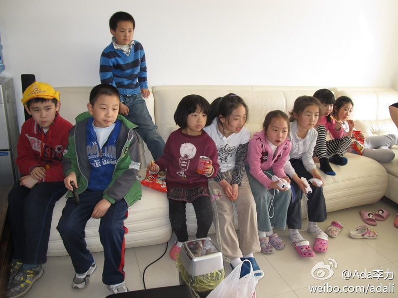

一同班小男生喜欢六岁的豆豆。男生对妈妈说“我长大了要搬到豆豆家里去”，妈妈问为什么，男生说，豆豆爸爸妈妈那个时候年龄大了，他要去和豆豆一起照顾豆爸豆妈。男孩妈妈说，那个时候我们年龄也大了，谁来照顾呢？男孩说“我每月会给你们八百块钱”。

Ada李力
2012-04-04
Ada李力
2012-04-04
美剧“生活大爆炸”里的谢耳朵，是很典型的亚斯伯格症候群的患者，智商高，自闭，人际关系有障碍。偏偏是剧中最受欢迎的一个角色。编剧把谢耳朵写成那个样子，仍不承认谢是自闭症患者，而广受女性观众热爱的谢耳朵扮演者是同性恋。我一直觉得幕后故事比台前更有意思。
Ada李力
2012-04-04
家长们纷纷反应, 周末和节假日的工作量比平时上班大多了, 从时间和精力上都如此. 我深有同感, 昨天家里最高峰时期, 来了九个孩子.
- 